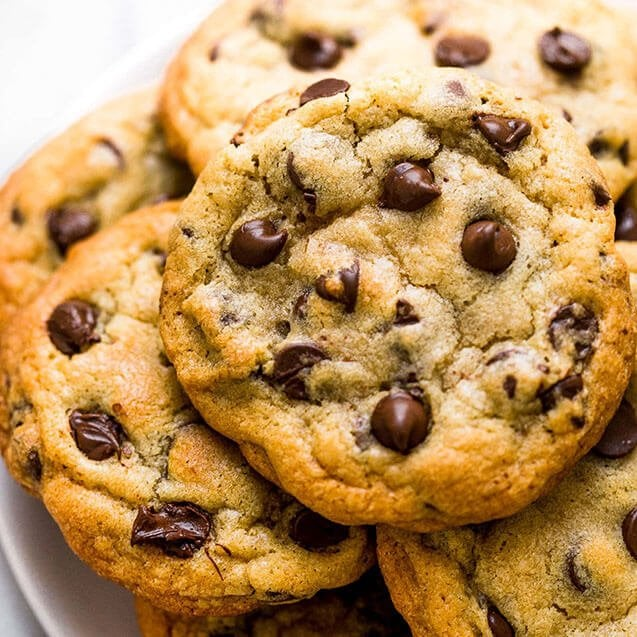

Chocolate Chip Cookies

Description
The best big, fat, chewy chocolate chip cookies just like you would get at a bakery!
Ingredients
- 2 cups all-purpose flour
- ½ teaspoon baking soda
- ½ teaspoon salt
- ¾ cup unsalted butter, melted
- 1 cup packed brown sugar
- ½ cup white sugar
- 1 tablespoon vanilla extract
- 1 egg
- 1 egg yolk
- 2 cups semisweet chocolate chips
Steps
- Preheat the oven to 325 degrees F (165 degrees C). Grease cookie sheets or line with parchment paper.
- Sift together the flour, baking soda, and salt; set aside.
- In a medium bowl, cream together the melted butter, brown sugar, and white sugar until well blended.
- Beat in the vanilla, egg, and egg yolk until light and creamy.
- Mix in the sifted ingredients until just blended.
- Stir in the chocolate chips by hand using a wooden spoon.
- Drop cookie dough ¼ cup at a time onto the prepared cookie sheets. Cookies should be about 3 inches apart.
- Bake for 15 to 17 minutes in the preheated oven, or until the edges are lightly toasted.
- Cool on baking sheets for a few minutes before transferring to wire racks to cool completely. Enjoy!